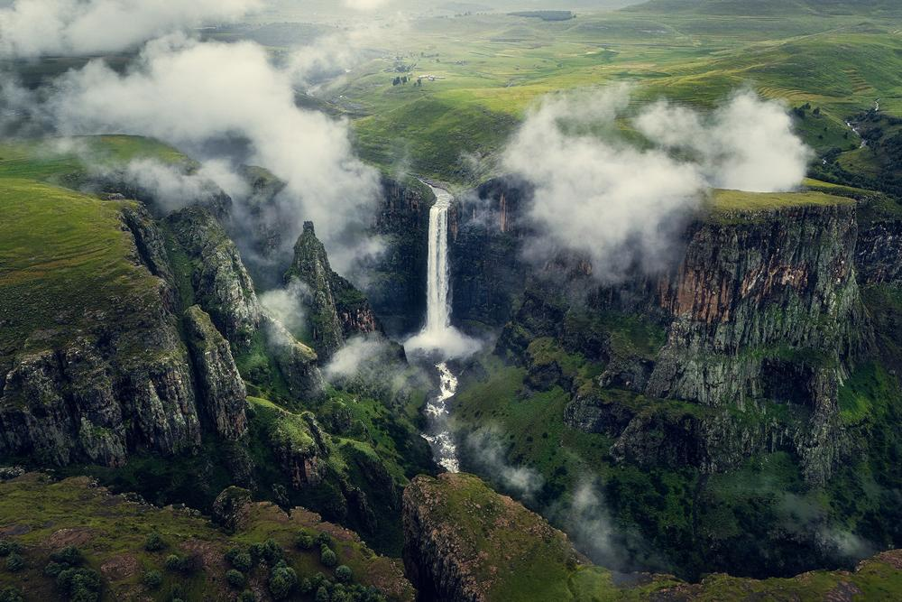

Maletsunyane Water Falls

Maletsunyane Falls is one of the most beautiful and famous natural attractions in Lesotho, located near Semonkong. The waterfall drops approximately 192 metres down a steep cliff, creating a breathtaking view. Visitors can enjoy sightseeing, photography, hiking and exciting activities such as abseiling. It is a perfect destination for tourists who love nature, adventure and beautiful scenery.